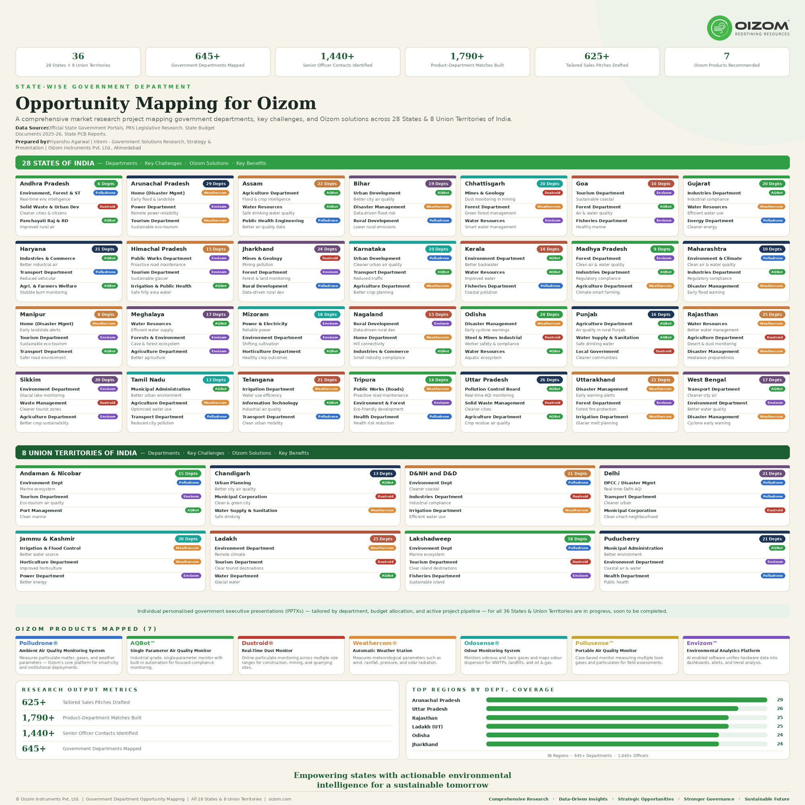

Government Department Opportunity Mapping
B2G opportunity mapping across 28 States and 8 Union Territories: 649 departments, 1,444+ officer-level contacts and 1,789+ department–product opportunities.


01Project background
Oizom Instruments makes environmental monitoring products. Government departments are a major buyer group, but the opportunity is spread across hundreds of departments in every State and Union Territory, each with its own mandates, budgets and decision-makers.
02Business objective
Build a structured, nationwide view of where Oizom's solutions fit within government, who the relevant officers are, and how to approach each department, so the sales team could run focused B2G outreach.
03Research methodology
Secondary research across government sources, translating national programmes into department-level needs:
- National Clean Air Programme (NCAP)
- Smart Cities Mission
- CPCB Online Continuous Emission Monitoring (OCEMS) requirements
04Data collection approach
Information was gathered from government portals, budgets, policies, annual reports and Smart City initiatives, and organised into a structured government database.
05Department segmentation
Departments were organised State by State and UT by UT, giving each of the 36 regions its own profile, problem statement and proposal.
Departments profiled by State / UT
Counted from the project workbook. Blue bars are States, green bars are Union Territories. Total: 649 departments.
06Product mapping
For every department, the workbook records the major problems it faces, the recommended Oizom products, their key benefits and a tailored pitch. Matching needs to products produced 1,789+ department–product opportunities.
How often each product was recommended
Number of the 649 department profiles in which the product was recommended.
| Product | Use case | Departments | |
|---|---|---|---|
| Envizom | Environmental data platform | 561 | |
| Weathercom | Weather monitoring | 428 | |
| Polludrone | Ambient air quality monitoring | 387 | |
| AQBot | Industrial air quality monitoring | 200 | |
| Dustroid | Dust monitoring | 140 | |
| Odosense | Odour monitoring | 58 | |
| Pollusense | Low-cost sensor network | 1 |
07Opportunity identification
Opportunities were qualified and prioritised with the PPVVC framework (Pain – Power – Vision – Value – Control), and 1,444+ officer-level contacts were identified across the 649 departments.
08Sales pitch development
36 State/UT-specific proposal presentations and 628 solution-oriented sales pitches were prepared, aligned to each department's needs, with reporting to the VP – Sales. A Customer Experience & Satisfaction Survey was also designed to support CSAT measurement.
09Key findings
- Data platforms had the widest fit. Envizom, the environmental data platform, was recommended in 561 of 649 department profiles (86%), followed by Weathercom (428) and Polludrone (387).
- Need spans well beyond environment departments. Profiles cover public works, rural development, mining, energy, urban development and public health engineering, not only pollution control.
- National programmes anchor the pitch. NCAP, the Smart Cities Mission and CPCB OCEMS create monitoring needs at department level, which made them the starting point for each pitch.
- Coverage was deepest in Arunachal Pradesh (29 departments), Uttar Pradesh (26) and Ladakh (25).
10Business implications
The database, qualification framework and pitch library give a sales team a prioritised starting point for government outreach across India, rather than starting from scratch in each State.